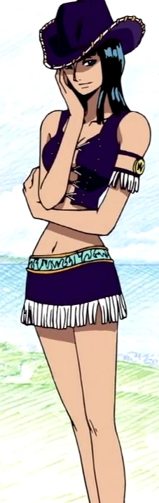

Llistat de la tripulació del Barret de Palla
Monkey D. Ruffy
El capità, conegut pel sobrenom de Ruffy Barret de Palla. El seu objectiu és convertir-se en el Rei dels Pirates, trobant el tresor llegendari deixat per l'antic Rei dels Pirates, Gol D. Roger. Va menjar la fruita Gomu Gomu no Mi, cosa que el converteix en un home de goma. Surt del seu poble a l'East Blue i emprèn un viatge a través de la Grand Line, reunint una tripulació coneguda com els Pirates del Barret de Palla, que s'enfronta a nombrosos enemics. És un noi alegre, amb una gran ambició i molta gana.

Roronoa Zoro
Va ser el primer membre que es va unir als Pirates del Barret de Palla i està considerat un dels membres més forts després d'en Ruffy. És un dels tres millors lluitadors de la tripulació, juntament amb en Ruffy i en Sanji, i el seu somni és convertir-se en el millor espadatxí del món. Gairebé sempre porta al seu costat les seves tres espases. S'ha entrenat des de la infància en l'ús de l'espasa i ha desenvolupat un estil de lluita únic amb tres espases, una de les quals subjecta amb la boca.

Nami
Amb el sobrenom de Gata Lladre, és la navegant dels Pirates del Barret de Palla. Va ser el tercer membre de la tripulació i la segona a unir-s'hi. Va ser membre dels Pirates d'Arlong i inicialment es va unir als Pirates del Barret de Palla per robar-los. El seu somni és dibuixar un mapa de tot el món. Posseeix un bastó creat per l'Usopp, conegut com a Sorcery Clima-Tact, que li permet controlar diversos elements del clima.

Usopp
És el franctirador dels Pirates del Barret de Palla. És el quart membre de la tripulació i el tercer a unir-s'hi. El seu somni és arribar a ser un gran pirata com el seu pare Yasopp, tripulant de la banda de pirates de Shanks, el Pèl-roig. És el responsable que la banda d'en Ruffy obtingués el vaixell Going Merry. És covard de vegades, mitòman i mentider compulsiu.

Vinsmoke Sanji
Inicialment cuiner al restaurant flotant Baratie, en Sanji s'uneix als Pirates del Barret de Palla com a cuiner de la tripulació, encoratjat pels seus col·legues i el seu mentor Zeff a fer-se a la mar per perseguir el seu somni: trobar el llegendari All Blue. Per conservar les mans per cuinar, lluita només utilitzant les cames. És extremadament galant i un cuiner excel·lent.

Chopper
És el metge dels Pirates del Barret de Palla. És un ren de nas blau que va menjar la fruita Hito Hito, adquirint forma i intel·ligència humanes. Procedent de l'illa de Drum, és el sisè membre de la tripulació i el cinquè a unir-s'hi al final de l'arc de Drum.

Nico Robin
També coneguda com la Nena Dimoni, és l'arqueòloga dels Pirates del Barret de Palla. És el setè membre de la tripulació i la sisena a unir-s'hi, al final de l'arc d'Arabasta. Va deixar temporalment la tripulació durant l'arc de Water 7, però s'hi va reincorporar durant l'arc d'Enies Lobby. El seu somni és conèixer la veritable història investigant els poneglyphs. Va consumir la fruita Hana Hana, que li permet fer florir parts del seu cos en qualsevol superfície.

Franky
Sobrenomenat l'Home de Ferro, és el fuster naval dels Pirates del Barret de Palla i un dels oficials principals de la Gran Flota. És el vuitè membre de la tripulació i el setè a unir-s'hi, al final de l'arc del retorn a Water 7. Originari del South Blue, va ser membre dels Tom's Workers. Després d'un incident que va danyar el seu cos, es va convertir en un ciborg.

Brook
També conegut com a Soul King, és el músic dels Pirates del Barret de Palla i un dels seus espadatxins. És el novè membre de la tripulació i el vuitè a unir-s'hi, al final de l'arc de Thriller Bark. Originari del West Blue, va formar part dels Pirates Rumbar. Va morir i va ressuscitar gràcies al poder de la fruita Yomi Yomi, però la seva ànima va trigar tant a trobar el cos que va quedar reduït a un esquelet.

Jinbe
El Cavaller del Mar Jinbe és el timoner dels Pirates del Barret de Palla i un dels oficials principals de la Gran Flota. És el desè membre de la tripulació i el novè a unir-s'hi. És un gyojin tauró balena, antic capità dels Pirates del Sol i membre dels Set Senyors de la Guerra del Mar (Shichibukai). Durant la guerra de Marineford va fer amistat amb en Ruffy i, més tard, es va unir a la tripulació al final de l'arc de Whole Cake Island.